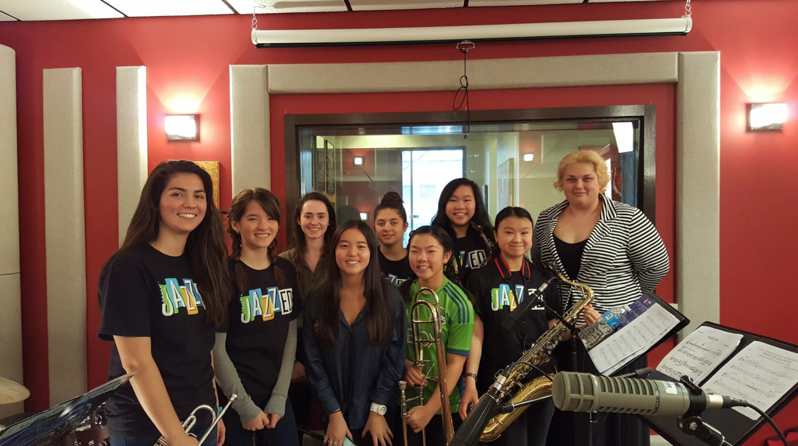
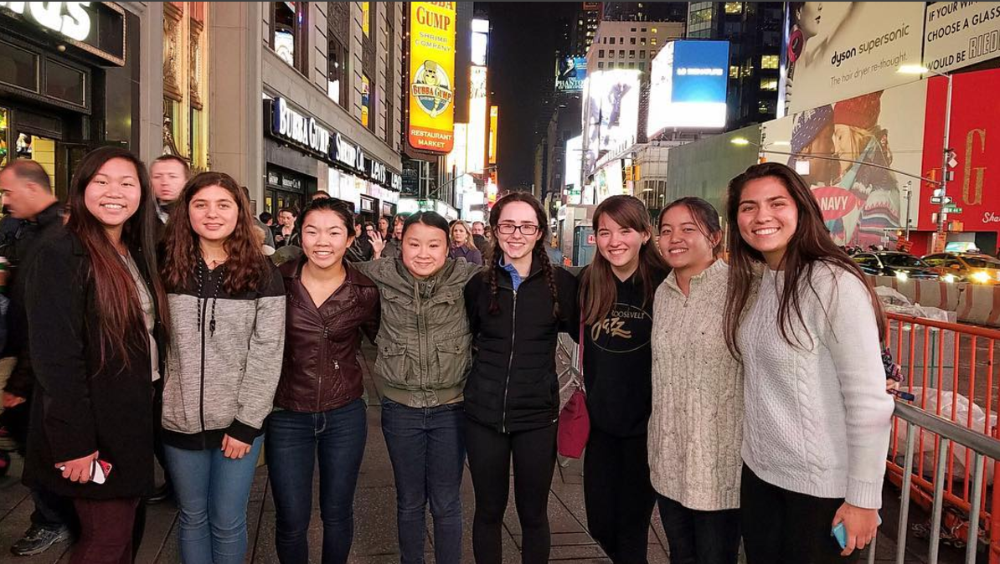
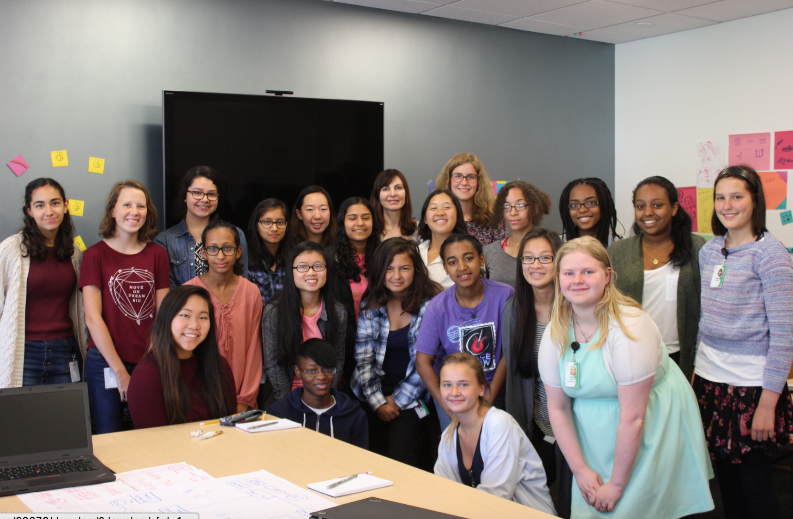
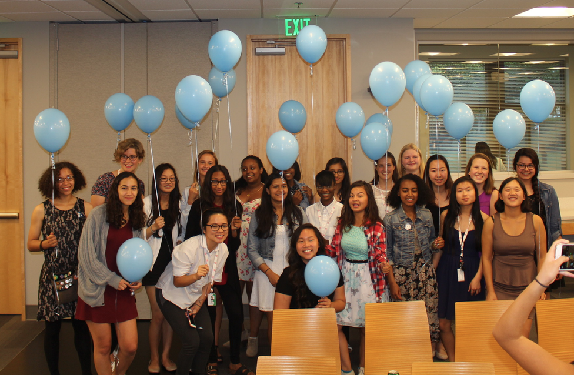
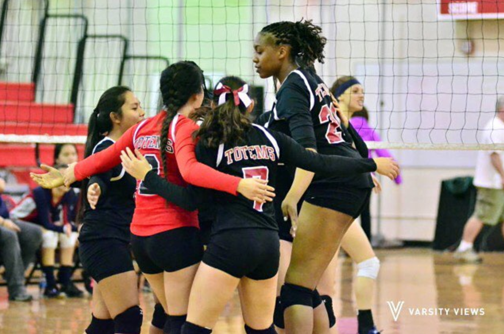

I have been in my high school band for all for years now. Freshman year I was the spirit captain. Sophomore year I was the section leader along with sophomore representative for the band council. Junior year I was section leader again and band president. This year, in my senior year, I have the honor of being chosen as one of two drum majors. I am also continuing the role as section leader and band president. I have the role of leading sectionals and the band in our field show rehearsals and pep nights. I also offer my high-spirit and positivity to the band in order to get them excited. I have won Most Spirited three years in a row now.
 
Melba-Liston All-Stars Octet
I was selected to be one of the eight girls to go and perform at the Berklee City Annual Music Summit in Newark, New Jersey in November of 2016. It was an absolutely amazing opportunity. We were also able to visit New York City. After making a statement of being an all-girls group to be selected as one of the five groups to perform, the KNKX Seattle/Tacoma radio station invited us to play as one of their jazz segments.
 
Girls Who Code
In the summer of 2016, I applied to be in this 7-week summer immersion program that was held at the Adobe offices in Fremont, and got in! It was an amazing educational opportunity I was able to take on. Each week I learned a new skill from different coding languages, robotics, and web development. In addition, I got to meet a lot of influential women in the tech field, and learned lots of different soft skills in order to prepare me for my future.

Sammamish Totems Volleyball
I played volleyball throughout all four years of high school. I made JV as a freshman and became JV captain my sophomore year. I moved up to varsity my junior year and held the title of varsity captain my junior and senior year. I learned a lot about teamwork and confidence throughout the four years of being with this program.